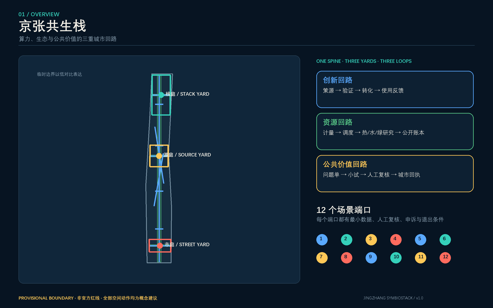
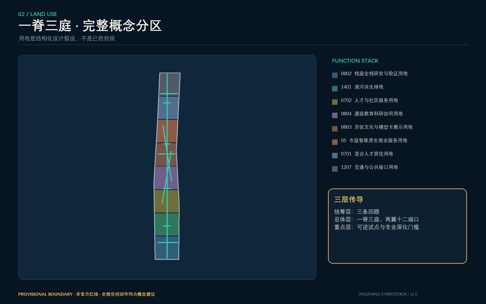
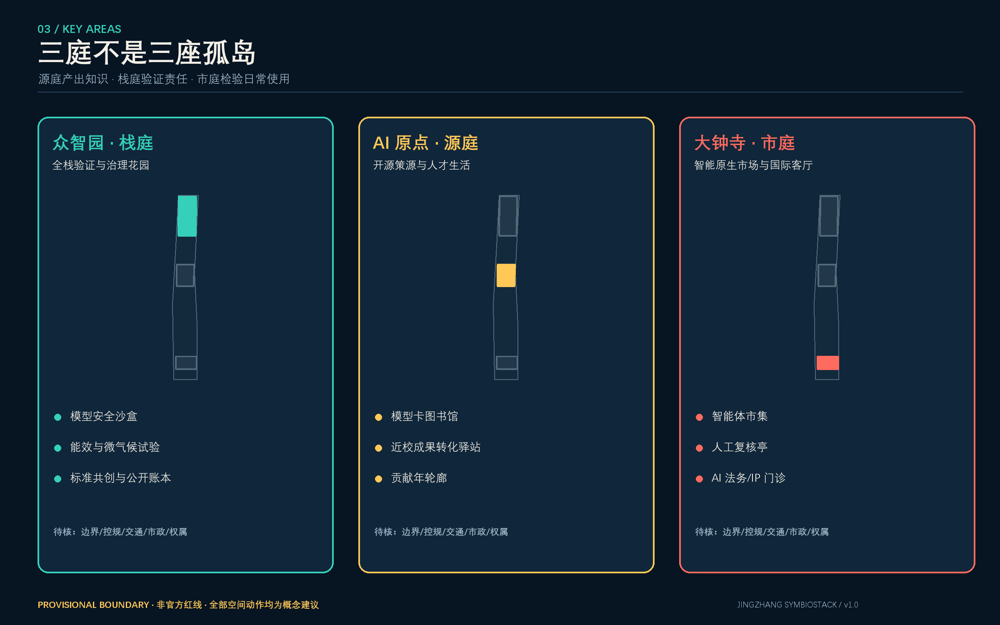
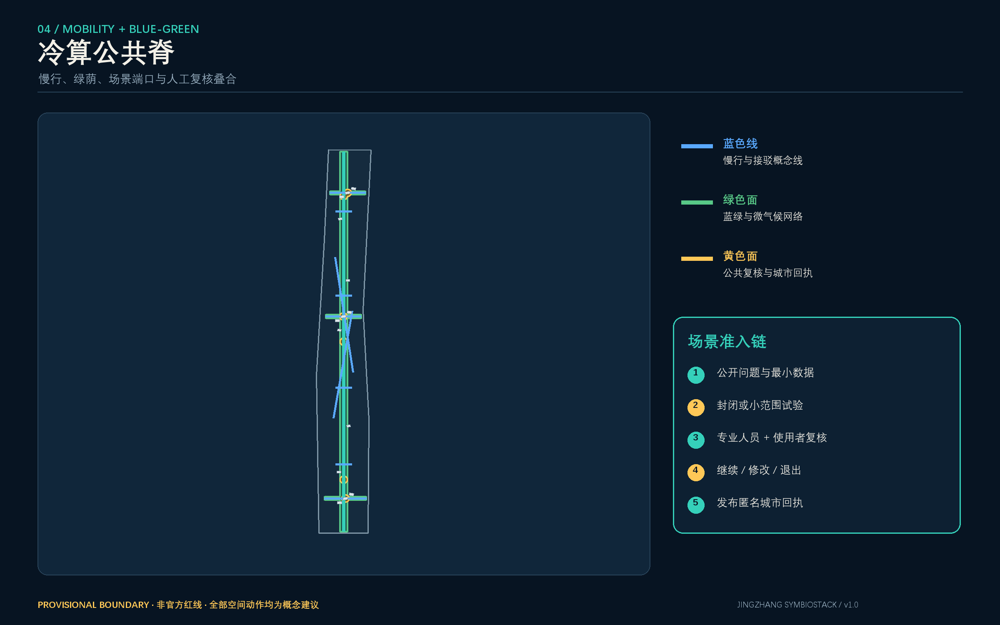
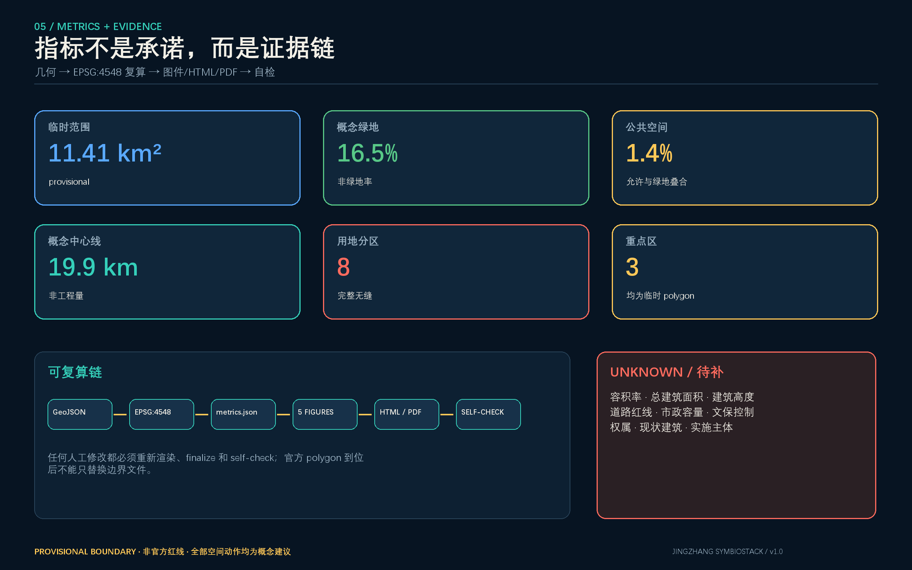

JINGZHANG SYMBIOSTACK · v1.0
京张
共生栈
让每一次推理都能说明资源代价，让每一个场景都留下公共回执。

临时边界：本页全部地图基于仓库 provisional polygon，不是官方红线，不用于精确面积、控规、权属、工程或审批判断。
总览地图与三层范围
统筹研究范围组织生态机制；总体设计范围组织一脊三庭；三处重点区域用于可逆验证。空间提议均为概念建议。

重点区域
栈庭 / 众智园
全栈验证、安全治理、资源账本与生态界面。
源庭 / AI 原点
开源策源、模型卡、人才生活与贡献记忆。
市庭 / 大钟寺
智能原生市场、人工复核与国际交往。

用地分区 · 交通慢行 · 蓝绿公共空间 · 建筑
八个概念用地分区完整覆盖临时边界；十条慢行/接驳中心线、蓝绿公共脊、公共复核空间和十四个建筑原型共同表达空间关系。建筑原型不是现状建筑或批准规模。

AI 场景
十二个场景端口全部设置最小数据、人工复核、申诉和退出条件；前三项为产业测试验证场景。
- 01模型能效账本 TVS
- 02无障碍出行代理 TVS
- 03微气候舒适试验 TVS
- 04京张双语文化导览
- 05模型卡图书馆
- 06城市问题单与公共回执
- 07AI 法务/IP 门诊
- 08端侧算力预约驿站
- 09青年开源共修夜
- 10机器人可逆测试湾
- 11社区服务协同助手
- 12智能原生市集
核心指标
临时范围11.41 km²
概念绿地16.5%
公共空间1.4%
重点区3

更新项目与分期
| 触发包 | 概念项目 | 准入条件 |
|---|---|---|
| P1 验证公共价值 | 模型卡、城市回执、三处可逆端口 | 伦理、安全、场地许可 |
| P2 连接三庭 | 公共脊连续性、服务互认 | 官方边界、道路、文保资料核查 |
| P3 资源共生深化 | 资源计量、微气候、端侧算力研究 | 市政、能源、消防和责任主体确认 |
任务覆盖与自检状态
23 / 23
公告 1.3、1.4、1.5 与 agent.1-agent.6 均映射到正文、几何、指标、图纸和 HTML。
15 / 15
正式设计深度项全部建立证据链；缺数据不伪造结论。
PASS 目标
确定性校验、空间复核、视觉包装与专业证据复核在提交前完整运行。
来源
正式依据：官方公告、清权任务书、本地专业标准快照、仓库 source registry。六个国际案例仅作背景机制比较。核心图均由本投稿 GeoJSON/JSON 派生，无远程图片或地图瓦片。
假设
官方边界、控规、道路、建筑、权属、文保、市政与公共服务底数尚缺；详见 assumptions.json。所有高影响 AI 场景须数据最小化、人工复核、申诉与安全关闭。